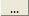

HEAD
HEAD
A opção <HEAD> representa o conteúdo da tag HEAD da linguagem HTML a qual pode conter informações sobre o documento. Para isso outras tags são inseridas tais como <link>, <script>, <title>, etc. Com este elemento o desenvolvedor bastará definir o valor para as tags mais usadas mas com a liberdade de inserir outras.
O campo Título define qual será o título da página. Esta propriedade corresponde à tag <TITLE> de um documento HTML.
O campo Link CSS define quais são os arquivos de estilo CSS (Cascade Style Sheet) que são utilizados pela página. Ao definir o arquivo a ser usado coloque-o com o seu caminho relativo ao servidor web e caso queira usar mais de um arquivo separe-os por vírgula. Por default, esse campo já vem preenchido com /|wi.proj.id|/page.css que é o arquivo de estilos CSS que o WIzard usa no momento da criação das páginas. Esta propriedade corresponde à tag <LINK> com o atributo REL="stylesheet".
As classes que se encontram definidas nos arquivos CSS definidos aqui poderão ser listadas clicando no botão  que aparece ao lado da propriedade Classe que alguns elementos possuem.
O campo Link JS define quais são os arquivos de script JS (JavaScript) que são utilizados pela página. Ao definir o arquivo a ser usado coloque-o com o seu caminho relativo ao servidor web e caso queira usar mais de um arquivo separe-os por vírgula. Por default, esse campo já vem preenchido com /wi2/page.js que é o arquivo de scripts JS do WebIntegrator que contém as funções de validação e formatação dos campos do formulário. Esta propriedade corresponde à tag <SCRIPT>.
As funções JavaScript que se encontram definidas nos arquivos JS definidos aqui irão ser listadas nos eventos dos campos de formulário bastando clicar no ícone que aparece ao lado do nome do evento. Para a função para ser listada, antes de sua declaração deve estar o identificador //@list o qual pode ser atribuído qual a assinatura padrão que a função terá. Como exemplo, suponha que o código abaixo seja relativo a um arquivo JavaScript:
/*
* com a declaração abaixo está sendo informado que a função myFunction
* será listada que sua assinatura padrão é myFunction(Alô Web!!).
*/
//@list=myFunction(Alô Web!!)
function myFunction(msg) {
alert(msg);
}
/*
* esta função não será listada porque o identificador //@list não
* aparece antes da declaração da função.
*/
function myFunction2() {
alert("Não sou listada!");
}
//@list=myFunction3(this)
function myFunction3(obj) {
alert(obj.value);
}
O campo Código é uma área de texto livre onde o desenvolvedor poderá acrescentar outras tags. Vale lembrar que as tags que forem inseridas nesse campo serão colocadas dentro da tag <HEAD>.